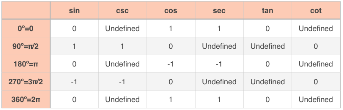
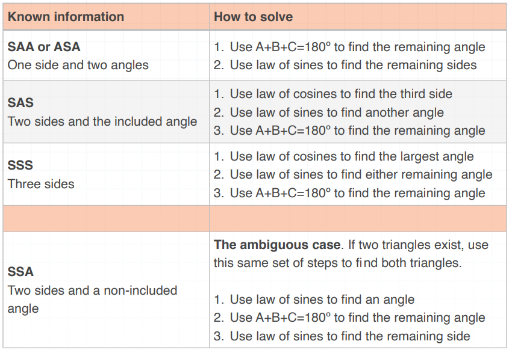

Trigonometry
Trigonometric Identities
Basic Identities
$sin ~\theta = \frac{opposite}{hypotenuse}$
$cos ~\theta = \frac{adjacent}{hypotenuse}$
$tan ~\theta = \frac{opposite}{adjacent}$
$tan ~\theta = \frac{sin ~\theta}{cos ~\theta}$
In the unit circle, the radius (hypotenuse) is always $1$, in which case:
$sin ~\theta = \frac{y}{r}$
$cos ~\theta = \frac{x}{r}$
$tan ~\theta = \frac{y}{x}$
Reciprocal Identities
Cosecant is the reciprocal of sine, and vice versa. Secant is the reciprocal of cosine, and vice versa; and cotangent is the reciprocal of tangent, and vice versa.
$csc ~\theta = \frac{1}{sin ~\theta} = \frac{hypotenuse}{opposite} = \frac{r}{y}$
$sec ~\theta = \frac{1}{cos ~\theta} = \frac{hypotenuse}{opposite} = \frac{r}{x}$
$cot ~\theta = \frac{1}{tan ~\theta} = \frac{adjacent}{opposite} = \frac{x}{y} = \frac{cos ~\theta}{sin ~\theta}$
Pythagorean Identities
With the unit circle, if we start with the Pythagorean theorem, we can substitute $a = x = cos ~\theta$, $b = y = sin ~\theta$, and $c = r = 1$.
$a^2 + b^2 = c^2$
$(sin ~\theta)^2 + (cos ~\theta)^2 = 1^2$
$sin^2 \theta + cos^2\theta = 1$
For tangent, we can derive:
$1 + tan^2 \theta = sec^2 \theta$
$sec^2 \theta - tan^2 \theta = 1$
With tangent, we can derive:
$1 + tan^2 \theta = sec^2 \theta$
$sec^2 \theta - tan^2 \theta = 1$
With cotangent, we can derive:
$1 + cot^2 \theta = csc^2 \theta$
$csc^2 \theta - cot^2 \theta = 1$
So with the Pythagorean identities, we can:
- Find sine given cosine, or vice versa
- Find cosecant given cotangent, or vice versa
- Find secant given tangent, or vice versa
- Find cosecant or secant given sine and cosine
When Trigonometric Functions are Undefined
Trigonometric functions can be undefined at quadrantal angles; i.e., when either the x-axis or y-axis coordinate is $0$. At a coordinate of $(-1,0)$ or $(1,0)$, $sin ~\theta = 0$, and at a coordinate of $(0,1)$ or $(0,-1)$, $cos ~\theta = 0$. This means that other functions for which sine or cosine is in the denominator, the function becomes undefined at these points.

Coterminal Angles
Angles are said to be coterminal if they differ by $2 \pi$ or $360^{\circ}$; i.e., when $\alpha = \theta + n360^{\circ}$ or $\alpha = \theta + n 2 \pi$.
Reference Angles
A reference angle for an angle $\theta$ in standard position is the positive angle formed by the x-axis and the terminal side of $\theta$. Reference angles are always positive and acute. The measure of the reference angle will depend on the quadrant of the angle.
| $\theta$'s Quadrant | $\beta$ in Radians | $\beta$ in Degrees |
|---|---|---|
| I | $\beta = \theta$ | $\beta = \theta$ |
| II | $\beta = \pi - \theta$ | $\beta = 180{^\circ} - \theta$ |
| III | $\beta = \theta - r$ | $\beta = \theta - 180^{\circ}$ |
| IV | $\beta = 2 \pi - \theta$ | $360^{\circ} - \theta$ |
Angles in Circles
Arc Length
Arc length is given by $s = r \theta$, where $s$ is the length of the arc, $r$ is the radius of a circle, and $\theta$ is the central angle that carves out that particular arc.
Area of a Circular Sector
When $\theta$ is defined in radians, the area of a circular sector is $A = \frac{1}{2}r^2 \theta$. In degrees, $A = \left( \frac{\pi}{360} \right) r^2 \theta$.
Linear and Angular Velocity
Speed and Velocity
Velocity is defined by two factors: magnitude and direction. A positive velocity indicates movement forward, and negative indicates backward. Speed is only the magnitude portion of velocity, and is always positive. Linear velocity tells us how fast the length of an arc is changing. Imagine the arc of a circle. If the angle that creates the arc is growing, such that the length of the arc is increasing, then linear velocity will be posiitve, because the length of the arc is increasing over time.
$v = \frac{S}{t}$
- $r$ is linear velocity
- $s$ is arc length
- $t$ is time
While linear velocity gives the rate of change of the arc length, angular velocity tells us the rate of change of the interior angle; i.e., the rate at which the central angle is swept out as we move around the circle. The formula for angular velocity is:
$\omega = \frac{\theta}{t}$
- $\omega$ is the angular velocity
- $\theta$ is the radian measure of the interior angle at time $t$
Angular speed and angular velocity use the same formula; the difference between the two is that angular speed is a scalar and angular velocity is a vector.
Relating Linear and Angular Velocity
To relate linear velocity and angular velocity to each other, we can use the arc length formula $s = r \theta$, by first subtituting $r \theta$ into the linear velocity formula for $s$.
$v = \frac{s}{t} = r \frac{\theta}{t}$
Then, because we know that angular velocity is $\omega = \frac{\theta}{t}$, we can replace $\frac{\theta}{t}$ with $\omega$.
$v = \frac{s}{t} = r \frac{\theta}{t} = \omega$
i.e., angular velocity is the quotient of linear velocity and the radius of the circle.
Inverse Trigonometric Functions
Equations are inverses of one another when the $x$ and $y$ values are switched. For instance, the inverse of $y=x^2$ is $x=y^2$. Their curves are reflections of each other over the diagonal line $y=x$.
If we take the inverse of $y = sin ~\theta$, we're really switching $y$ and $\theta$, and get $\theta = sin ~y$. We're asking 'what angle $\theta$ do we get for a given y-value?'.
Example:
In both radians and degrees, use the unit circle to find the set of angles whose sine is $\frac{1}{2}$.
On the unit circle, we know that the y-value in the coordinate point is the value that gives the sine of the angle. Therefore, we need to find angles where the corresponding point has a y-value equal to $\frac{1}{2}$. Those angles are $\frac{\pi}{6}$ and $\frac{5 \pi}{6}$. To give the full set of angles, we have to give all the angles that are coterminal with these two.
$\theta = \frac{\pi}{6} = 2n \pi \text{ and } \theta = \frac{5 \pi}{6} + 2n \pi$
$\theta = 30^{\circ} + n(360^{\circ}) \text{ and } \theta = 150^{\circ} + n(360^{\circ})$
We know that $x = sin ~y$ is the inverse sine relation, but usually like to express equations for $y$ in terms of $x$. We do that by applying the inverse sine to both sides of the equation. We indicate the inverse sine as $sin^{-1}$ or $arcsin$.
| Trigonometric Function | Inverse |
|---|---|
| $y = sin ~x$ | $y = sin^{-1}x \text{ or } arcsin ~x$ |
| $y = cos ~x$ | $y = cos^{-1}x \text{ or } arccos ~x$ |
| $y = tan ~x$ | $y = tan^{-1}x \text{ or } arctan ~x$ |
| $y = csc ~x$ | $y = csc^{-1}x \text{ or } arccsc ~x$ |
| $y = sec ~x$ | $y = sec^{-1}x \text{ or } arcsec ~x$ |
| $y = cot ~x$ | $y = cot^{-1}x \text{ or } arccot ~x$ |
Additional Trigonometric Identities
Sum-Difference Identities for Sine and Cosine
When we want to find the sine or cosine of the sum or difference of two angles, we can use the sum-difference identities. For two angles $\theta$ and $\alpha$, the sum-difference identities for sine are:
$sin(\theta + \alpha) = sin ~\theta ~cos ~\theta + cos ~\theta ~sin ~\alpha$
$sin(\theta - \alpha) = sin ~\theta ~cos ~\theta - cos ~\theta ~sin ~\alpha$
And the sum-difference identities for cosine are:
$cos(\theta + \alpha) = cos ~\theta ~cos ~\alpha - sin ~\theta ~sin ~\alpha$
$cos(\theta - \alpha) = cos ~\theta ~cos ~\alpha + sin ~\theta ~sin ~\alpha$
Cofunction Identities
Cofunction identities give a relationship between sine and cosine, secant and cosecant, and tangent and cotangent. The graph of $y = sin ~x$ shifted to the left by $\frac{\pi}{2}$ units looks exactly like the graph of $y = cos ~x$, and the same is true of tangent and cotangent, as well as secant and cosecant. This is the premise of cofunction identities.
$sin ~\theta = cos \left( \frac{\pi}{2} - \theta \right)$
$cos ~\theta = sin \left( \frac{\pi}{2} - \theta \right)$
$tan ~\theta = cot \left( \frac{\pi}{2} - \theta \right)$
$csc ~\theta = sec \left( \frac{\pi}{2} - \theta \right)$
$sec ~\theta = csc \left( \frac{\pi}{2} - \theta \right)$
$cot ~\theta = tan \left( \frac{\pi}{2} - \theta \right)$
Example:
Find an angle $\theta$ that satisfies the equation $sec \frac{3 \pi}{4} = csc ~\theta$
$sec ~\theta = csc \left( \frac{\pi}{2} \right)$
$csc \left( \frac{\pi}{2} - \frac{3 \pi}{4} \right)$
$= csc \left( \frac{\pi}{2} \left( \frac{2}{2} \right) - \frac{3 \pi}{4} \right)$
$= csc \left( \frac{2 \pi}{4} - \frac{3 \pi}{4} \right)$
$= csc \left( \frac{\pi}{4} \right)$
So the angle $\theta$ that satisfies the equation is $\theta = - \frac{\pi}{4}$. This tells us that the secant of the angle $\frac{3 \pi}{4}$ has the same value as cosecant of the angle $\frac{- \pi}{4}$.
Sum-Difference Identities For Tangent
In the same way that we had sum-difference identities for the sine and cosine functions, we also have a sum identity and difference identity for the tangent function, derived from the sine and cosine sum-difference identities.
$tan(\theta + \alpha) = \frac{ tan ~\theta + tan ~\alpha }{ 1 - tan ~\theta ~tan ~\alpha }$
$tan(\theta - \alpha) = \frac{ tan ~\theta - tan ~\alpha }{ 1 + tan ~\theta ~tan ~\alpha }$
Double-Angle Identities
Very often, we'll handle trigonometric functions with an angle of something like $2 \theta$. We'll usually want to convert this to get the $2$ out of the angle, but we cannot simply say that $sin 2 \theta$ is the same as $2 ~sin ~\theta$. The way we can get the $2$ out of the argument is by using the double-angle identities, which are derived from the sum identities.
To build the double-angle identity for sine, we start with the sum identity for sine, and replace $\alpha$ with $\theta$.
$sin(\theta + \alpha) = sin ~\theta ~cos ~\alpha + cos ~\theta ~sin ~\alpha$
$sin(\theta + \theta) = sin ~\theta ~cos ~\theta + cos ~\theta ~sin ~\theta$
$sin(2 \theta) = sin ~\theta ~cos ~\theta + cos ~\theta ~sin ~\theta$
$sin(2 \theta) = 2 ~sin ~\theta ~cos ~\theta$
Similarly, we build the double-angle for cosine by starting with the sum identity, and replacing $\alpha$ with $\theta$.
$cos(\theta + \alpha) = cos ~\theta ~cos ~\alpha - sin ~\theta ~sin ~\theta$
$cos(\theta + \theta) = cos ~\theta ~cos ~\theta - sin ~\theta ~sin ~\theta$
$cos2 \theta = cos^2 \theta - sin^2 \theta$
The complete left of double-angle identities, including the alternate forms of the double-angle identity for cosine, are:
$sin2 \theta = 2 ~sin ~\theta ~cos ~\theta$
$tan2 \theta = \frac{2 ~tan ~\theta}{1 - tan^2 \theta}$
$cos2 \theta = cos^2 \theta - sin^2 \theta$
$cos2 \theta = 1 - 2 ~sin^2 \theta$
$cos2 \theta = 2 ~cos^2 \theta - 1$
Half-Angle Identities
Half-angle identities allow us to rewrite a trigonometric function when the argument is $\theta/2$, transforming it to just $\theta$. We can build these from the double-angle identities.
To find the half-angle identity for sine, we start with the double-angle identity for cosine, and solve it for $sin ~\theta$.
$cos ~2 \theta = 1 - 2 ~sin^2 \theta$
$2 ~sin^2 \theta + cos^2 \theta = 1$
$2 ~sin^2 \theta = 1 - cos ~2 \theta$
$sin^2 \theta = \frac{1 - cos ~2 \theta}{2}$
$sin ~\theta = \pm \sqrt{ \frac{1 - cos ~2 \theta}{2} }$
We'll replace $2 \theta$ with $\alpha$.
$sin \frac{\alpha}{2} = \pm \sqrt{ \frac{1 + cos ~\alpha}{2} }$
We build the half-angle identity for cosine in the same way, but start with its double-angle identity instead. The half-angle identities can be summarized as follows.
$cos \frac{\theta}{2} = \pm \sqrt{ \frac{1 + cos ~\theta}{2} }$
$sin \frac{\theta}{2} = \pm \sqrt{ \frac{1 - cos ~\theta}{2} }$
$tan \frac{\theta}{2} = \pm \frac{ \sqrt{1 - cos ~\theta} }{ \sqrt{1 + cos ~\theta} }$
$tan \frac{\theta}{2} = \frac{sin ~\theta}{1 + cos ~\theta}$
$tan \frac{\theta}{2} = \frac{1 - cos ~\theta}{sin ~\theta}$
The sign we choose will depend on the quadrant of the angle. For instance, using the half-angle cosine identity, cosine is positive in the first and fourth quadrants and negative in the second and third quadrants.
Example:
If $\pi \lt \theta \lt 3 \pi/2$ and $cos ~\theta = \frac{-\sqrt{6}}{7}$
If we substitute $cos ~\theta = \frac{-\sqrt{6}}{7}$ into the half-angle identity for cosine, we get:
$cos \frac{\theta}{2} = \pm \sqrt{ \frac{1 + cos ~\theta}{2} }$
$cos \frac{\theta}{2} = \pm \sqrt{ \frac{ 1 + \left( \frac{\sqrt{6}}{7} \right) }{2} }$
$cos \frac{\theta}{2} = \pm \sqrt{ \frac{ \frac{7-\sqrt{6}}{7} }{2} }$
$cos \frac{\theta}{2} = \pm \sqrt{ \frac{7 - \sqrt{6}}{14} }$
If we also substitute $cos ~\theta = \frac{-\sqrt{6}}{7}$ into the half-angle identity for sine, we get:
$sin \frac{\theta}{2} = \pm \sqrt{ \frac{1 - cos ~\theta}{2} }$
$sin \frac{\theta}{2} = \pm \sqrt{ \frac{ 1 - \left( \frac{ \sqrt{-6}}{7} \right) }{2} }$
$sin \frac{\theta}{2} = \pm \sqrt{ \frac{ \frac{7+\sqrt{6}}{7} }{2} }$
$sin \frac{\theta}{2} = \pm \sqrt{ \frac{7 + \sqrt{6}}{14} }$
Now to figure out the quadrant of $\frac{\theta}{2}$. We were told that $\theta$ is in the third quadrant, $\pi \lt \theta \lt 3 \pi/2$. We'll divide through the inequality by $2$ to change $\theta$ into $\frac{\theta}{2}$.
$\frac{\pi}{2} \lt \frac{\theta}{2} \lt \frac{3 \pi}{4}$
The bounds $[\frac{\pi}{2}, \frac{3 \pi}{4}]$ define space only in the second quadrant, so $\frac{\theta}{2}$ must be in the second quadrant.
Product-to-Sum Identities
Sometimes we'll have the product of trigonometric functions and want to break up the product into a sum of difference. For instance, given the product $sin ~\theta ~cos ~\alpha$, we can rewrite it as:
$\frac{1}{2}[sin(\theta + \alpha) + sin(\theta - \alpha)]$
The four product-to-sum identities are as follows:
$sin ~\theta ~cos ~\alpha = \frac{1}{2}[ sin(\theta + \alpha) + sin(\theta - \alpha) ]$
$cos ~\theta ~sin ~\alpha = \frac{1}{2}[ sin(\theta + \alpha) - sin(\theta - \alpha) ]$
$cos ~\theta ~cos ~\alpha = \frac{1}{2}[ cos(\theta + \alpha) + cos(\theta - \alpha) ]$
$sin ~\theta ~sin ~\alpha = \frac{1}{2}[ cos(\theta - \alpha) - cos(\theta + \alpha) ]$
These product-to-sum identities can help eliminate sine or cosine from the expression, putting it completely in terms of one or the other.
Sum-to-Product Identities
Similarly, there are 4 sum-to-product identities:
$sin ~\theta + sin ~\alpha = 2 ~sin \left( \frac{\theta + \alpha}{2} \right) ~cos \left( \frac{\theta - \alpha}{2} \right)$
$sin ~\theta - sin ~\alpha = 2 ~cos \left( \frac{\theta + \alpha}{2} \right) ~sin \left( \frac{\theta - \alpha}{2} \right)$
$cos ~\theta + cos ~\alpha = 2 ~cos \left( \frac{\theta + \alpha}{2} \right) ~cos \left( \frac{\theta - \alpha}{2} \right)$
$cos ~\theta + cos ~\alpha = 2 ~sin \left( \frac{\theta + \alpha}{2} \right) ~sin \left( \frac{\theta - \alpha}{2} \right)$
The Law of Sines and Cosines
The Law of Sines
For any triangle with vertices $A$, $B$, and $C$, where side $a$ is opposite angle $A$, side $b$ opposite $B$, and side $c$ is opposite angle $C$, the law of sines says:
$\frac{a}{sin ~A} = \frac{b}{sin ~B} = \frac{c}{sin ~C}$
It is equivalent to write these with the numerators and denominators flipped:
$\frac{sin ~A}{a} = \frac{sin ~B}{b} = \frac{sin ~C}{c}$
It's usually easiest to set up the equation such that the value we're trying to solve for is in the numerator. Note that these are pairwise equivalent for any two terms of the above equations as well.

In the SAA case, we know two adjacent angles and a side opposite one of those angles. In the ASA case, we know two adjacent angles and the side between them. Either way, to solve these kinds of triangles, we'll start by using $A + B + C = 180^{\circ}$ to find the measure of the remaining unknown angle. Once we know all three angles, we'll use the law of sines to find the length of the two remaining unknown sides.
Example:
Solve the triangle that has angles $38^{\circ}$ and $64^{\circ}$ where the length of the side opposite the third angle is $55$.
$A + B + C = 180^{\circ}$
$38^{\circ} + 64^{\circ} + c = 180^{\circ}$
$C = 180^{\circ} - 38^{\circ} - 64^{\circ}$
$C = 78^{\circ}$
The known side is opposite the third angle $C$, so we'll say $c=55$.
$\frac{a}{sin ~380^{\circ}} = \frac{b}{sin ~64^{\circ}} = \frac{55}{sin ~78^{\circ}}$
We'll just use the first and third parts of the 3-part equation to solve for $a$.
$\frac{a}{sin ~38^{\circ}} = \frac{55}{sin ~78^{\circ}}$
$a = \frac{55 ~sin ~38^{\circ}}{sin ~78^{\circ}}$
$a \approx 34.6$
The Ambiguous Case of the Law of Sines
The ambiguous case of the law of sines occurs in a SSA triangle for which we know the length of the two sides of the triangle, and a non-included angle (one of the angles not between the two known sides). In this case, 0, 1, or 2 triangles are possible, depending on the lengths of the two known sides and the measure of the one known angle.
Example:
Let's start with a case where one triangle is possible. A triangle has one side with length $3$ and another with length $5$. The angle opposite the side with length $5$ is $40^{\circ}$. Complete the triangle.
$\frac{3}{sin ~A} = \frac{5}{sin ~40^{\circ}} = \frac{c}{sin ~C}$
Use just the first two parts of this equation in order to solve for $A$.
$\frac{3}{sin ~A} = \frac{5}{sin ~40^{\circ}}$
$3 = \frac{5}{sin ~40^{\circ}}(sin ~A)$
$3 ~sin ~40^{\circ} = 5 ~sin ~A$
$sin ~A = \frac{3 ~sin ~40^{\circ}}{5}$
$sin ~A \approx 0.386$
$A \approx arcsin(0.386)$
$A \approx 22.7^{\circ}$
Since the sum of the interior angles of any triangle is $180^{\circ}$, the measure of the third interior angle $C$ is approximately:
$C \approx 180^{\circ} - 40^{\circ} - 22.7^{\circ}$
$C \approx 117.3^{\circ}$
Use the second and third parts of the 3-part equation to solve for $c$.
$\frac{5}{sin ~40^{\circ}} = \frac{c}{sin ~C}$
$\frac{5}{sin ~40^{\circ}} \approx \frac{c}{sin ~117.3^{\circ}}$
$c \approx \frac{5}{sin ~40^{\circ}}(sin ~117.3^{\circ})$
$c \approx 6.91$
The side lengths of the triangle are $a=3$, $b=5$, and $c \approx 6.91$. The angle measures are $A \approx 22.7^{\circ}$, $B = 40^{\circ}$, and $C = 117.3^{\circ}$.
Example:
Let's do an example where no triangle is possible. Solve the triangle with side lengths $0.68$ and $0.92,$ if angle $C = 118^{\circ}$ is opposite the side with length $0.68$.
$\frac{a}{sin ~A} = \frac{0.92}{sin ~B} = \frac{0.68}{sin ~118^{\circ}}$
Use the second and third parts of this 3-part equation to solve for $B$.
$\frac{0.92}{sin ~B} = \frac{0.68}{sin ~118^{\circ}}$
$0.92 = \frac{0.68}{sin ~118^{\circ}}(sin ~B)$
$0.92 ~sin ~118^{\circ} = 0.68 ~sin ~B$
$sin ~B = \frac{0.92 ~sin ~118^{\circ}}{0.68}$
$sin ~B \approx 1.195$
The sine of any angle must have a value on the interval $[-1,1]$. Because we are getting $sin ~B \approx 1.195$, a triangle with the given measurements is impossible.
Example:
Now an example where two triangles are possible. Solve the triangle with side lengths $41$ and $54$, where the angle opposite $a=41$ is $38^{\circ}$.
$\frac{sin ~38^{\circ}}{41} = \frac{sin ~B}{54} = \frac{sin ~C}{c}$
We'll use the first two parts of the equation to solve for the angle $B$.
$\frac{sin ~38^{\circ}}{41} = \frac{sin ~B}{54}$
$sin ~B = \frac{54 ~sin ~38^{\circ}}{41}$
$sin ~B \approx 0.811$
We could find $sin ~B \approx 0.811$ in both the first and second quadrants, since these are the quadrants where sine is positive. To find the value of angle $B$ in the first quadrant, we'll apply the inverse sine function to both sides to cancel the sine on the left and solve for $B$.
$B \approx arcsin(0.811)$
$B \approx 54^{\circ}$
To find the other possible value of $B$ in the second quadrant, we'll subtract $B \approx 54^{\circ}$ from $180^{\circ}$.
$B' \approx 180^{\circ} - 54^{\circ}$
$B' \approx 126^{\circ}$
Then the remaining angle is either:
$C \approx 180^{\circ} - 38^{\circ} - 54^{\circ}$
$C \approx 88^{\circ}$
or
$C' \approx 180^{\circ} - 38^{\circ} - 126^{\circ}$
$C' \approx 16^{\circ}$
Finally, we can find the measure of the remaining side:
$\frac{sin ~38^{\circ}}{41} \approx \frac{sin ~54^{\circ}}{54} \approx \frac{sin ~88^{\circ}}{c}$
$0.015 \approx 0.015 \approx \frac{sin ~88^{\circ}}{c}$
$c \approx \frac{sin ~88^{\circ}}{0.015}$
$c \approx 67$
or,
$\frac{sin ~38^{\circ}}{41} \approx \frac{sin ~126^{\circ}}{54} \approx \frac{sin ~16^{\circ}}{c'}$
$0.015 \approx 0.015 \approx \frac{sin ~16^{\circ}}{c'}$
$c' = \frac{sin ~16^{\circ}}{0.015}$
$c' \approx 18$
Triangle 1: $A = 38^{\circ}, B \approx 54^{\circ}, C \approx 88^{\circ}, a = 41, b = 54, c = 67$
Triangle 2: $A = 38^{\circ}, B' \approx 126^{\circ}, C' \approx 16^{\circ}, a = 41, b = 54, c \approx 18$
Area From the Law of Sines
From the law of sines, we can find formulas that give the area of an oblique triangle. Given any oblique triangle, with angles $A$, $B$, $C$, and side lengths $a$, $b$, and $c$, the area will be:
$A = \left( \frac{1}{2} \right)ah$
where $a$ is the base and $h$ is the height. By the definition of sine, the height is $h = b ~sin ~C$. Therefore, we can write the area formula as:
$a = \left( \frac{1}{2} \right) ab ~sin C$
If we choose either of the other two sides as a base, we can write similar formulas for the area:
$A = \frac{1}{2} ab ~sin ~C$
$A = \frac{1}{2} ac ~sin ~B$
$A = \frac{1}{2} bc ~sin ~A$
What matters is that we use two sides, and the angle opposite the side we didn't use. That happens to be the angle between the two sides we did choose.
Law of Cosines
We've talked about the SAA or ASA case and the SSA ambiguous case which require the law of sines. In the SAS and SSS cases, both require the law of cosines.
For any triangle with vertices $A$, $B$, and $C$, where side a is opposite angle $A$, side b is opposite angle $B$, and side $c$ is opposite angle $C$, the law of cosines says that:
$c^2 = a^2 + b^2 - 2ab ~cos ~C$
$b^2 = a^2 + c^2 - 2ac ~cos ~B$
$a^2 = b^2 + c^2 - 2bc ~cos ~A$
All three formulas are the same and can be used interchangably. These can be solved for the cosine functions:
$cos ~C = \frac{ a^2 + b^2 - c^2 }{ 2ab }$
$cos ~B = \frac{ a^2 - b^2 + c }{ 2ac }$
$cos ~A = \frac{ -a^2 + b^2 + c }{ 2bc }$
The Pythagorean theorem is a special case of the law of cosines where one angle is $90^{\circ}$.
Example:
Solve the triangle that has side lengths $11$, $6$, and $9$.
$a^2 = b^2 + c^2 - 2bc ~cos ~A$
$11^2 = 6^2 + 9^2 - 2(6)(9) ~cos ~A$
$121 = 36 + 81 - 108 ~cos ~A$
$4 = -108 ~cos ~A$
$cos ~A = - \frac{1}{27}$
$cos \approx -0.037$
Solve for $A$ by applying the inverse cosine function to both sides.
$A \approx arccos(-0.037)$
$A \approx 92^{\circ}$
The easiest way to get the next angle will be to plug in the law of sines.
$\frac{sin ~A}{a} = \frac{sin ~B}{b} = \frac{sin ~C}{c}$
$\frac{sin ~92^{\circ}}{11} = \frac{sin ~B}{6} = \frac{sin ~C}{9}$
Use the first and second parts of this three-part equation to solve for $B$.
$\frac{sin ~92^{\circ}}{11} = \frac{sin ~B}{6}$
$sin ~B = \frac{6 ~sin ~92^{\circ}}{11}$
$sin ~B \approx 0.5451$
Solve for $B$ by applying the inverse sine function to both sides.
$B \approx arcsin(0.5451)$
$B \approx 33^{\circ}$
Once we have the first two angles, we can find the third by subtracting the other two from $180^{\circ}$.
$C = 180^{\circ} - A - B$
$C \approx 180^{\circ} - 92^{\circ} - 33^{\circ}$
$C \approx 55^{\circ}$
The given triangle is defined by:
$a = 11, b = 6, c = 9, A \approx 92^{\circ}, B \approx 33^{\circ}, C \approx 55^{\circ}$
Heron's Formula For Area of a Triangle
When we know the lengths of all 3 sides of a triangle, we can find its area using Heron's formula.
$Area = \sqrt{ s(s-a)(s-b)(s-c) }$
where $a$, $b$, and $c$ are the side lengths of the triangle, and $s$ is one half the perimeter of the triangle.
$s = \frac{1}{2}(a + b + c)$
Example:
Apply Heron's formula to find the area of the triangle that has side lengths $16$, $19$, and $7$.
Let $a = 16$, $b = 19$, and $c = 7$
$s = \frac{1}{2}(16 + 19 + 7)$
$s = \frac{1}{2}(35 + 7)$
$s = \frac{1}{2}(42)$
$s = 21$
$Area = \sqrt{ s(s-a)(s-b)(s-c) }$
$= \sqrt{ 21(21-16)(21-19)(21-7) }$
$= \sqrt{ 21(5)(2)(14) }$
$= \sqrt{ 21(140) }$
$= \sqrt{2940} \approx 54.2$